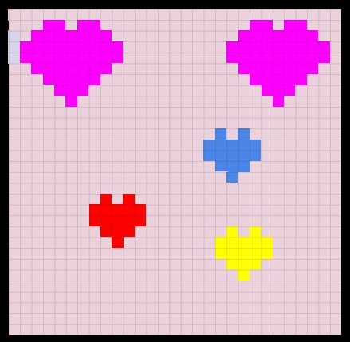

Thomas A. Edison CTE HIGH SCHOOL

Web Development
Code.org Unit 1-4 Review
02/28/24
Neelam Persaud
Unit 4 Review
Lesson 1: Variables Explore
What will the value of score be at the end of the program?
Lesson 2: Variables Investigate
Explain in your own words the process of creating and updating a variable. How does the Counter Pattern with Event work? When you create a variable, you assign it a name and an intial value. You can then update the value of the vatiable by using the variable name.As for the counter pattern with events, it's a way to keep track of a count ot a number that changes based on certain events or actions.
Lesson 3: Variables Practice
In this lesson we practice creating and updating variables
Lesson 4: Variables Make
In this unit I learned how to code my own app to make it function smoothly
also make the buttons on tha app work so that when people use the app they have no issues with it.
Lesson 5: Conditionals Explore
Boolean Expression is an expression that evaluates to either true or flase when evaluated. Logical Operator is a symbol that tells the computer to make a comparison between two values. &&(and) is a logical operater that tells the computer to compare two values and return true if both values are true. ||(or) is a logical operater that tells the computer to compare two values and return true if one or both values are true.
Lesson 6: Conditionals Investigate
When creating an if-else-if statement you should always make your first condition the most specific. Write a short paragraph responding to the questions below. What does it mean to put the most specific case first?
Why is it important to put the most specific case first? What types of errors does it help avoid? Putting the most specific case first in an if-else-if statement is important because it helps ensure that the conditions are evaluated in the correct order. To put the most specific case first means to prioritzie the condition that has the narrowest ormost precise criteria. By doing so, you increase the likelihood that the program will produce the correct output and aviod any errors.
Lesson 7: Conditionals Practice
This lesson is about conditonals and how to use them to make an app work.
Lesson 8: Conditionals Make
In this part of the lesson I learned how to code the ticket price and to make the price go up at acertain age, In thispart of the lesson I learned how to add dicsount
Lesson 9: Functions Explore / Investigate
In your own words describe the benefits of creating functions in your code? Creating a function enhance code organization and redability. Breaking down your code into smaller, and more easier to understand. Each function have a specfic purpose, making code mor organized and easier to navigate.
Lesson 10: Functions Practice
In this lesson we praction how to make a variable function and how to make the variables work.
Lesson 11: Functions Make
In this lesson I hade to make a quote maker app, I learned how to design my own color or put the colors that suits me as the background and the text, I also know how to make the color chnage when your pressed specific buttons.
Lesson 12: Decision Maker App
By making and designing my own app I learned to make my own variables and makeing if-else-statement
Digital Notebook
Unit Project